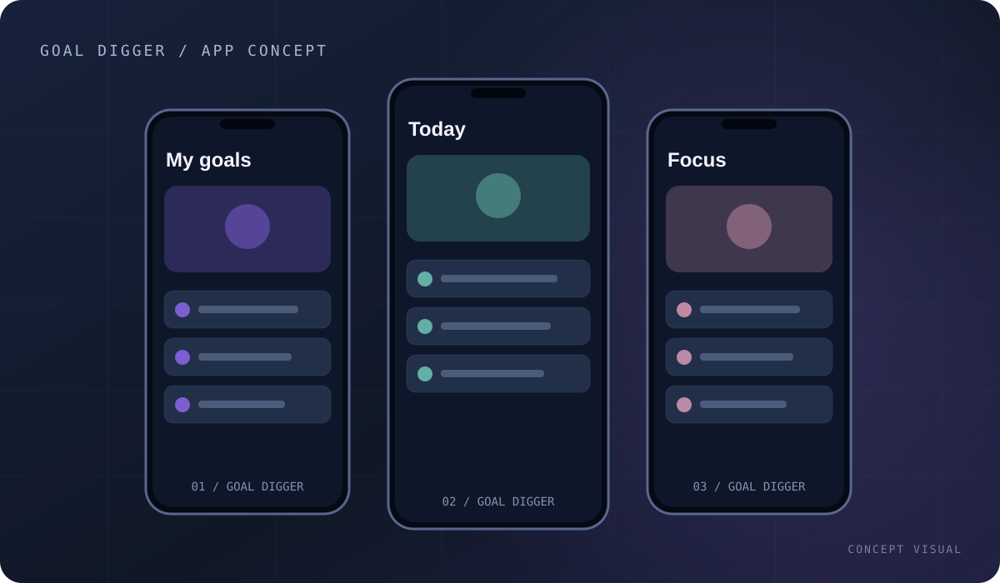

FEATURED PROJECTAI / PRODUCT ENGINEERING
Goal Digger
↗An agentic AI productivity app that turns ambitious goals into actionable schedules, built with a Flutter and Firebase stack.
› EECS @ National Tsing Hua University / Indonesia → Taiwan
AI Engineering · Mobile · Systems
Building software that turns ideas into products.
I work across intelligent applications, mobile engineering, and systems—always interested in what makes software reliable and genuinely useful.
Type help to explore this portfolio.
01 / ABOUT · 關於我
I'm Wilson Antony Thang, a third-year EECS undergraduate at National Tsing Hua University. I enjoy building software across different layers—from agentic AI and mobile applications to embedded systems and C/C++.
My favorite projects go beyond getting code to compile: the architecture should make sense, edge cases deserve attention, and the experience should stay understandable as it grows.
02 / FEATURED PROJECTS · 精選專案
Real products, difficult constraints, and engineering lessons. Explore what I built and how each system works.
03 / ENGINEERING FOCUS · 技術方向
Select a focus area to explore where I’ve applied it.
Agentic planning, intelligent workflows, tool orchestration, structured outputs and fallback behavior.
04 / TOOLKIT · 技術工具
05 / EDUCATION · 學歷
B.S. Electrical Engineering & Computer Science · Hsinchu, Taiwan